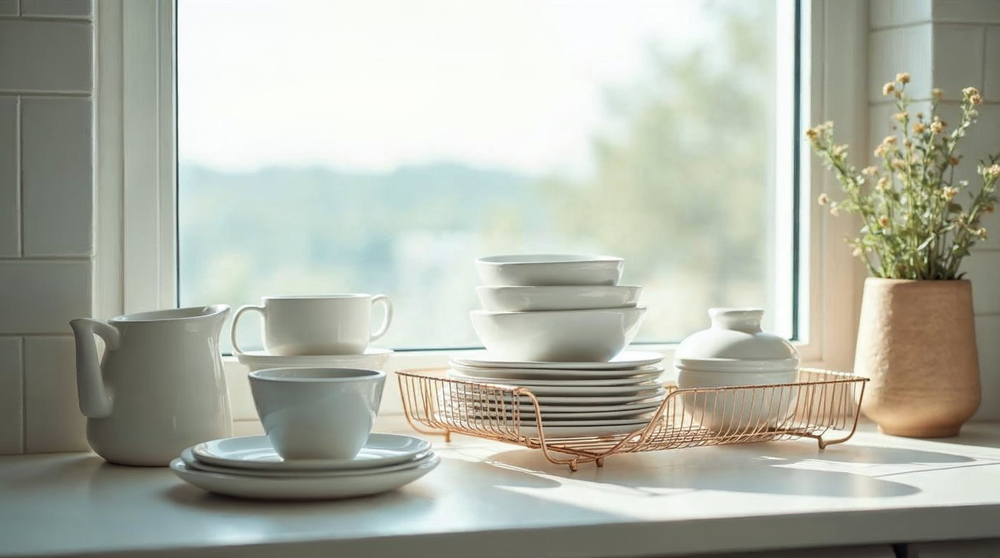
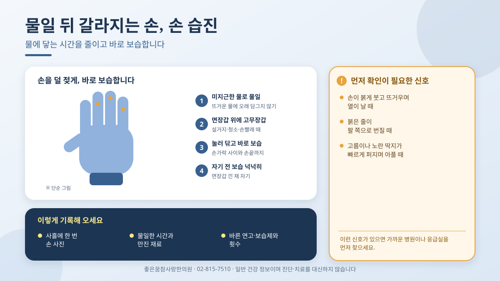

이종호 한의사 감수좋은꿈참사랑한의원 대표원장 (한의사 면허번호 19769)발행 2026-11-26 · 수정 2026-11-26
이 글의 차례
저녁 설거지를 마치고 고무장갑을 벗으면 손끝이 하얗게 불어 있습니다. 조금 지나면 손가락 마디가 당기고, 갈라진 틈으로 물이 닿을 때마다 따끔합니다. 김치를 버무린 다음 날에는 손바닥까지 화끈거려 밤에 몇 번이고 손을 비비게 되지요.
손 습진은 손 피부의 보호막이 물과 세제, 마찰에 거듭 지치면서 붉어지고 거칠어지고 갈라지는 상태를 말합니다. 집안일을 많이 하는 분께 흔해 '주부습진'이라고 불러 왔지만, 요리사·미용사·간호사·어린아이를 돌보는 분처럼 손에 물이 자주 닿는 누구에게나 생길 수 있습니다.
진료실에서 이런 말씀을 자주 듣습니다. "연고를 바르면 좀 가라앉다가 설거지 한 번에 도로 터져요." "손을 안 쓸 수가 없는데 어떻게 하라는 거예요." 그 답답함이 충분히 이해됩니다. 손은 하루에도 수십 번 써야 하는 곳이니까요.
그래서 저는 '손을 쓰지 마세요'라는 말 대신, 손을 쓰면서도 덜 지치게 하는 방법을 같이 찾습니다. 피부과에서 처방받은 연고는 처방대로 이어 가시고, 한의원에서는 그 곁에서 손이 쉬어 갈 틈과 몸 전체의 리듬을 함께 살핍니다.
왜 손이 이렇게 쉽게 갈라질까요
피부 맨 바깥에는 얇은 기름막과 각질층이 벽돌담처럼 쌓여 수분을 지키고 자극을 막습니다. 뜨거운 물과 세제는 이 기름막을 녹여 내고, 오래 물에 불은 피부는 마르면서 더 많이 수분을 잃습니다. 이 일이 하루에도 여러 번 되풀이되면 담이 허물어집니다.
담에 틈이 생기면 평소에는 괜찮던 세제, 과일즙, 양파와 마늘 즙 같은 것도 피부 속으로 스며들어 붉고 따가운 반응을 일으킵니다. 따가워서 더 자주 씻고, 씻을수록 더 마르는 고리가 생기는 것이지요.
손바닥과 손가락은 기름샘이 적은 편이라 한번 마르면 회복이 더딥니다. 게다가 손을 쉬게 둘 시간이 거의 없으니, 다 아물기 전에 다시 자극을 받는 일이 계속됩니다. 손 습진이 오래가는 이유가 여기에 있습니다.
자극 때문인지, 알레르기 때문인지 나눠 봅니다
손 습진은 크게 두 갈래로 나눠 생각합니다. 하나는 물과 세제 같은 자극이 쌓여 생기는 경우로, 가장 흔합니다. 물일을 많이 한 날 더 심해지고, 휴가처럼 손을 덜 쓴 기간에는 한결 편해지는 모양을 보입니다.
다른 하나는 특정 물질에 몸이 알레르기 반응을 보이는 경우입니다. 고무장갑의 성분, 금속 장신구의 니켈, 향료나 염색약, 방부제 같은 것이 원인이 될 수 있습니다. 닿은 자리를 넘어 손등이나 손목까지 번지거나, 물집이 잡히며 몹시 가려운 경우에 의심해 봅니다.
알레르기가 의심되면 피부과에서 첩포 검사로 원인 물질을 찾아보시도록 안내합니다. 원인이 무엇인지 알면 피할 것이 분명해져 생활이 훨씬 수월해집니다. 어릴 때 아토피 피부염이 있었던 분은 손 습진이 더 쉽게 생긴다고 알려져 있어, 그 이야기도 함께 여쭙니다.
손 습진과 비슷해 보이는 다른 피부
손이 거칠고 가렵다고 모두 같은 습진은 아닙니다. 모양이 비슷해도 다루는 방법이 달라서, 처음에 잘 나누어 보는 일이 중요합니다.
- 한포진: 손가락 옆면이나 손바닥에 좁쌀 같은 작은 물집이 모여 생기고 몹시 가렵습니다. 물집이 마르면서 껍질이 벗겨집니다.
- 건선: 경계가 또렷하고 두꺼운 붉은 판 위에 은백색 각질이 쌓입니다. 팔꿈치·무릎·두피에도 비슷한 자리가 있는지 봅니다.
- 손 무좀: 한쪽 손에만 각질이 일고 발에도 무좀이 있는 경우가 많습니다. 피부과에서 각질을 떼어 곰팡이 검사를 해 보아야 구분됩니다.
- 손이 트는 단순 건조: 겨울에 손등이 하얗게 일어나는 정도로, 보습만으로 비교적 잘 가라앉습니다.
무좀을 습진으로 알고 스테로이드 연고를 오래 바르면 오히려 번질 수 있습니다. 그래서 처음 보는 모양이거나 한쪽 손에만 생겼다면 피부과에서 확인부터 받아 보시길 권합니다.

겨울과 명절, 손이 유난히 힘든 때
찬 바람이 불기 시작하면 공기가 마르고, 따뜻한 물로 설거지하는 시간이 길어집니다. 손 습진이 겨울에 심해지는 분이 많은 이유입니다. 난방으로 실내가 건조해지면 밤사이 손이 더 당깁니다.
명절과 김장철처럼 음식을 많이 하는 시기도 손에는 고비입니다. 양념과 채소 즙, 생선과 고기를 손으로 직접 만지는 시간이 늘어납니다. 이 시기를 앞두고 미리 장갑과 보습을 챙겨 두는 것만으로도 손이 받는 부담이 달라집니다.
명절이 지나고 나면 손이 한동안 회복할 시간을 주세요. 일주일 정도는 물일을 조금 나누어 맡기고, 보습을 평소보다 자주 하시길 권합니다. 가족에게 손 사정을 미리 이야기해 두면 도움을 청하기도 한결 쉬워집니다.
새해 첫 장보기, 이사, 대청소처럼 손을 많이 쓰는 일정도 마찬가지입니다. 한 주에 몰아서 하기보다 며칠에 걸쳐 나누면 손이 쉬어 갈 틈이 생깁니다.
장갑 하나도 쓰는 법이 있습니다
고무장갑은 물과 세제를 막아 주지만, 오래 끼고 있으면 안에서 땀이 차 손이 불어납니다. 그래서 얇은 면장갑을 먼저 끼고 그 위에 고무장갑을 끼시길 권합니다. 면장갑이 땀을 받아 주어 손이 덜 불습니다.
장갑 안에 물이 들어가면 바로 벗어 손을 말리고 새 장갑으로 바꾸는 편이 좋습니다. 장갑을 뒤집어 안쪽까지 잘 말려 두는 것도 잊지 마세요. 라텍스에 반응이 있는 분은 니트릴이나 비닐 재질로 바꿔 보시는 것도 방법입니다.
자주 듣는 오해를 짚어 봅니다
손 습진을 오래 겪으신 분일수록 이런저런 이야기를 많이 들으셨을 겁니다. 그 가운데 진료실에서 자주 다시 짚어 드리는 것들이 있습니다.
- "손을 자주 씻어야 깨끗해지고 빨리 아문다": 너무 자주 씻으면 오히려 보호막이 더 지칩니다. 씻은 뒤 보습까지가 한 번의 손 씻기라고 생각해 주세요.
- "연고는 몸에 나쁘니 그냥 버티는 편이 좋다": 이런 생각으로 처방받은 연고를 미루다 손이 더 갈라지는 경우가 있습니다. 바르는 기간과 양은 처방한 의사와 상의해 정하시면 됩니다.
- "옮는 병이라 가족과 수건을 따로 써야 한다": 손 습진 자체는 다른 사람에게 옮지 않습니다. 다만 무좀이 함께 있다면 이야기가 달라서 확인이 필요합니다.
이런 오해를 하나씩 풀어 가는 것만으로도 손을 대하는 마음이 한결 가벼워지는 분이 많습니다.
손의 상태를 단계별로 읽어 봅니다
손 습진은 하루아침에 심해지기보다 몇 단계를 거치며 깊어지는 경우가 많습니다. 지금 내 손이 어디쯤인지 알면 무엇부터 할지 정하기가 쉬워집니다.
- 처음에는 손끝과 손가락 마디가 당기고, 지문이 흐려지듯 매끈해집니다.
- 조금 지나면 붉은기와 가려움이 생기고, 손등이나 손가락 사이에 잔 각질이 일어납니다.
- 더 진행되면 손끝과 마디가 갈라져 피가 비치고, 물이 닿을 때마다 따갑습니다.
- 오래되면 피부가 두꺼워지고 거칠어져, 좋아졌다 나빠졌다를 되풀이합니다.
당기기만 하는 단계라면 장갑과 보습만으로도 많이 편해질 수 있습니다. 갈라지고 피가 비치는 단계라면 피부과 치료를 함께 받으시면서 손이 아물 시간을 만들어 주는 것이 먼저입니다.
잠과 피로도 손에 드러납니다
같은 양의 물일을 해도 어떤 주에는 괜찮고 어떤 주에는 손이 터집니다. 이야기를 들어 보면 잠을 설친 주, 일이 몰린 주, 몸살 기운이 있던 주와 겹치는 경우가 적지 않습니다.
피곤하면 피부가 회복할 힘도 줄어들고, 가려움을 참는 힘도 약해집니다. 밤에 긁다 깨고, 잠이 모자라 다음 날 더 예민해지는 고리가 생기기도 합니다. 그래서 저는 손만 보지 않고, 그 손의 주인이 요즘 어떻게 지내시는지를 함께 여쭙니다.
먼저 이렇게 여쭙니다
처음 오시면 대략 이런 순서로 여쭙니다. 기억나는 것부터 편하게 말씀해 주시면 됩니다.
- 손이 거칠어지고 갈라진 지는 얼마나 되었나요? 계절에 따라 달라지나요?
- 하루에 손을 씻거나 물일을 하는 횟수는 어느 정도인가요?
- 쓰는 세제, 손 소독제, 핸드크림, 장갑의 종류는 무엇인가요?
- 물집이 잡히거나 손등·손목까지 번진 적이 있나요?
- 어릴 때 아토피 피부염이나 비염, 천식이 있었나요?
- 피부과에서 받은 진단과 지금 바르는 연고, 먹는 약은 무엇인가요?
- 잠과 식사, 피로, 스트레스는 요즘 어떠신가요?
손을 쓰는 일이 직업이라면 하루 일과도 여쭙니다. 어느 시간에 물이 가장 많이 닿는지 알아야 손이 쉬어 갈 틈을 같이 찾을 수 있기 때문입니다.
일상에서 먼저 해 볼 수 있는 것
손 습진은 하루하루의 작은 습관이 쌓여 달라지는 경우가 많습니다. 한꺼번에 다 바꾸려 하면 지치니, 아래에서 지금 가장 쉬운 것 하나부터 골라 보세요.
- 물일은 미지근한 물로 하고, 뜨거운 물에 손을 오래 담그지 않기
- 설거지·청소·손빨래를 할 때는 면장갑 위에 고무장갑 끼기
- 손을 씻은 뒤에는 문지르지 말고 수건으로 꾹꾹 눌러 물기 닦기
- 물기를 닦은 뒤 바로, 향이 적은 보습제를 손가락 사이와 손끝까지 바르기
- 잠들기 전에는 보습제를 넉넉히 바르고 면장갑을 낀 채 자기
- 양파·마늘·귤·토마토를 손질할 때는 장갑을 끼거나 도구 쓰기
- 반지는 물일을 할 때 빼 두고, 반지 아래에 남은 비눗물을 잘 헹구기
갈라진 틈에 알코올 손 소독제가 닿으면 몹시 따갑습니다. 이럴 때는 소독제 대신 순한 비누로 씻고 보습하는 편이 손에 덜 부담이 될 수 있습니다. 다만 일터의 위생 기준이 있다면 그 기준을 먼저 따르세요.
핸드크림은 '한 번에 많이'보다 '자주 조금씩'이 손에 편합니다. 손이 닿기 쉬운 싱크대 옆, 현관, 가방에 하나씩 두면 잊지 않고 바르게 됩니다.
한의원에서 함께 살필 수 있는 경우
- 피부과 치료는 이어 가면서, 피곤하거나 잠을 설친 시기마다 손이 다시 터지는 경우
- 손발이 차고 소화가 약해, 계절이 바뀔 때마다 피부와 컨디션이 함께 떨어지는 경우
- 가려움 때문에 밤잠을 자주 설쳐 낮의 피로가 쌓이는 경우
- 손 습진이 오래가면서 일과 살림에 대한 부담으로 마음이 많이 지친 경우
좋은꿈참사랑한의원에 처음 오시면 손의 모양을 먼저 보고, 아래 '먼저 확인이 필요한' 신호가 없는지 살핍니다. 그다음 바르고 있는 연고와 먹는 약을 확인하고, 맥을 짚으며 잠과 소화, 체온, 땀, 대소변을 여쭙니다.
진찰을 마치면 상태에 맞춰 침 치료나 한약 상담이 필요한지 함께 정합니다. 한약을 상의할 때는 드시는 약과 겹치는 부분이 없는지 살피며 신중하게 정합니다. 손의 염증을 가라앉히는 연고 치료와 원인 물질 검사는 피부과의 몫이라, 필요하면 그쪽 진료를 먼저 안내합니다.
한의원 진료를 시작했다고 처방받은 연고를 임의로 끊지는 마세요. 바르는 기간과 양은 처방한 의사와 상의해 정하는 것이 안전합니다.
다시 오시면 지난번 이후 손이 따가웠던 날과 편했던 날, 정한 생활 목표 하나가 해 볼 만했는지부터 이어서 듣습니다. 목표가 버거웠다면 줄이고, 할 만했다면 하나를 더합니다.
이렇게 기록해 오시면 상담이 쉬워집니다
2주 정도만 짧게 적어 오셔도 이야기가 훨씬 구체적이 됩니다.
- 손의 상태를 같은 자리, 같은 밝기에서 사흘에 한 번 사진으로 찍어 두기
- 물일을 한 시간과 횟수, 그날 만진 재료(김치, 생선, 세제 등)
- 장갑을 낀 날과 안 낀 날
- 바른 연고와 보습제, 바른 횟수
- 가려워서 밤에 깬 날, 잠든 시각과 깬 시각
- 피곤했던 날, 마음이 많이 쓰였던 날
빠진 날이 있어도 괜찮습니다. 적힌 줄부터 같이 읽어 보겠습니다. 손은 매일 쓰는 곳이라 좋아지고 나빠지는 흐름이 기록에 잘 드러납니다.
가족을 위해, 일터를 위해 매일 물에 손을 담가 오신 시간이 얼마나 길었을까 싶습니다. 손이 갈라지는 것은 그만큼 애쓰셨다는 흔적이기도 합니다. 이제는 그 손이 조금 쉬어 갈 수 있도록 같이 방법을 찾아보겠습니다.
이런 증상은 먼저 확인이 필요합니다
- 손이 붉게 붓고 뜨거워지며 열이 나거나, 붉은 줄이 팔 쪽으로 번지는 경우
- 갈라진 자리에 고름이나 노란 딱지가 빠르게 퍼지며 통증이 심해지는 경우
이런 신호가 있으면 한의원보다 가까운 병원이나 응급실을 먼저 찾으세요.
함께 읽으면 좋은 글
- 손을 자주 씻는 일을 하는데 손가락 사이가 갈라지고 따가울 때는 어떻게 살피나요?
- 손가락에 작은 물집이 잡히고 가려운 한포진은 어떻게 살피나요?
- 팔꿈치·무릎·두피에 은백색 각질이 쌓이는 건선은 어떻게 살피나요?
- 가려움이 낮에 심한지 밤에 심한지는 왜 묻고, 어떻게 적어 두나요?

여쭙는 것
- 손이 거칠어지고 갈라진 지는 얼마나 되었나요? 계절에 따라 달라지나요?
- 하루에 손을 씻거나 물일을 하는 횟수는 어느 정도인가요?
- 쓰는 세제, 손 소독제, 핸드크림, 장갑의 종류는 무엇인가요?
생활에서 해 볼 것
- 물일은 미지근한 물로 하고, 뜨거운 물에 손을 오래 담그지 않기
- 설거지·청소·손빨래를 할 때는 면장갑 위에 고무장갑 끼기
- 손을 씻은 뒤에는 문지르지 말고 수건으로 꾹꾹 눌러 물기 닦기
한의원에서 함께 살필 것
- 피부과 치료는 이어 가면서, 피곤하거나 잠을 설친 시기마다 손이 다시 터지는 경우
- 손발이 차고 소화가 약해, 계절이 바뀔 때마다 피부와 컨디션이 함께 떨어지는 경우
- 가려움 때문에 밤잠을 자주 설쳐 낮의 피로가 쌓이는 경우
먼저 확인이 필요한 신호
- 손이 붉게 붓고 뜨거워지며 열이 나거나, 붉은 줄이 팔 쪽으로 번지는 경우
- 갈라진 자리에 고름이나 노란 딱지가 빠르게 퍼지며 통증이 심해지는 경우
한눈에 보는 표
| 구분 | 핵심 |
|---|---|
| 여쭙는 것 | 손이 거칠어지고 갈라진 지는 얼마나 되었나요? 계절에 따라 달라지나요? 하루에 손을 씻거나 물일을 하는 횟수는 어느 정도인가요? |
| 생활에서 해 볼 것 | 물일은 미지근한 물로 하고, 뜨거운 물에 손을 오래 담그지 않기 설거지·청소·손빨래를 할 때는 면장갑 위에 고무장갑 끼기 |
| 한의원에서 함께 살필 것 | 피부과 치료는 이어 가면서, 피곤하거나 잠을 설친 시기마다 손이 다시 터지는 경우 손발이 차고 소화가 약해, 계절이 바뀔 때마다 피부와 컨디션이 함께 떨어지는 경우 |
| 먼저 확인이 필요한 신호 | 손이 붉게 붓고 뜨거워지며 열이 나거나, 붉은 줄이 팔 쪽으로 번지는 경우 갈라진 자리에 고름이나 노란 딱지가 빠르게 퍼지며 통증이 심해지는 경우 |
자주 묻는 질문
한의원 진료를 받으면 피부과 연고를 끊어도 되나요?
아닙니다. 처방받은 연고는 처방한 의사와 상의 없이 줄이거나 끊지 않습니다. 한의원 진료는 그 치료와 함께 잠·소화·피로 같은 몸의 다른 부분을 살피는 자리입니다.
손 습진인지 무좀인지 한의원에서 구분할 수 있나요?
모양을 보고 의심해 볼 수는 있지만, 무좀은 각질을 떼어 곰팡이를 확인하는 검사가 필요해 피부과에서 받으시도록 안내합니다.
물일을 안 할 수는 없는데 어떻게 해야 하나요?
물일을 아예 끊기보다 면장갑과 고무장갑을 겹쳐 끼고, 미지근한 물을 쓰고, 씻은 뒤 바로 보습하는 습관부터 시작해 보세요. 진료 때 하루 일과를 함께 보며 손이 쉬어 갈 틈을 찾습니다.
피부과 약을 먹고 있는데 한약을 같이 먹어도 되나요?
드시는 약을 모두 알려 주시면 겹치는 부분이 없는지 살펴 신중하게 정합니다. 필요하면 처방한 곳과도 상의하시도록 안내합니다.
주말에도 진료하나요?
평일은 09:30~20:00(점심 13:00~14:00), 토·일·공휴일은 09:30~15:00(점심시간 없음)에 진료합니다. 방문 전 전화(02-815-7510)로 확인해 주세요.
좋은꿈참사랑한의원은 재진 때 지난번 이야기부터 이어서 여쭙니다. 진료시간과 예약은 오시는 길에서 확인하세요.
어디서 상담받을 수 있나요?
좋은꿈참사랑한의원은 서울 동작구 만양로2길 2 신성빌딩 3층·5층(서울 동작구 상도동, 7호선 상도역 3번 출구 근처)에 있습니다. 한의사 3명(이종호 대표원장, 조영기 수석진료원장, 정원영 진료원장)이 진료합니다. 진료시간은 평일 09:30~20:00(점심 13:00~14:00), 토·일·공휴일 09:30~15:00이며, 방문 전 전화로 확인을 권합니다. 예약은 네이버 예약, 카카오톡 상담, 전화 02-815-7510로 받습니다.
이 글은 일반적인 건강 정보이며 개인의 진단이나 치료를 대신하지 않습니다. 증상이 있거나 복용 중인 약이 있다면 진료를 통해 확인하세요. 치료 효과는 개인마다 다를 수 있습니다.
작성 기준: 일반적으로 알려져 있는 건강 정보를 참고해 정리했습니다(대표원장 감수). 증상 기록은 1~2주 동안 하루 1회, 비슷한 시간에 적어 오시면 지난 상태와 비교하기 쉽습니다.